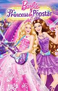
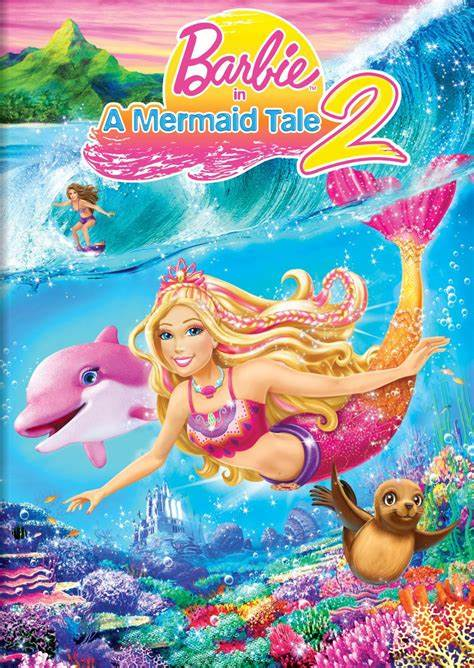
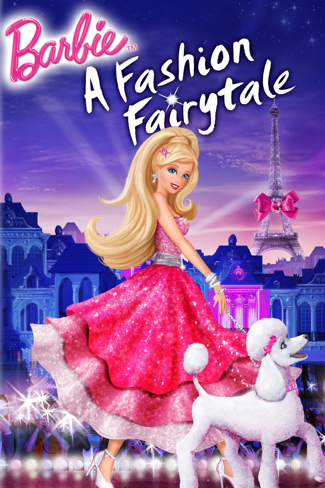

TRAILER & SINOPSIS
| NO |
JUDUL |
SINOPSIS |
TRAILER |
| 1 |
Barbie Princess and Popstar |
Barbie: The Princess & The Popstar is a 2012 animated musical fantasy film produced by Rainmaker Entertainment and released by Universal Studios Home Entertainment. It is the twenty-third installment in the Barbie film series and the second to be based on Mark Twain's 1881 novel The Prince and the Pauper (after Barbie as the Princess and the Pauper).
Featuring the voices of Kelly Sheridan, Jennifer Waris, Ashleigh Ball, Tiffany Giardina, Ellie King and Peter Kelamis, the plot follows two teenage girls, Keira, a world-famous popstar, and Tori, princess of Meribella (both portrayed by Barbie) who meet and discover they both have the magic to swap places. It was released to DVD on September 11, 2012, and made its television debut on Nickelodeon on November 16, 2012. |
click to watch |
| 2 |
Barbie in a Mermaid Tale |
Surf’s up for Barbie as she returns as Merliah, the fun and fashionable surfing champion who’s also a magical mermaid princess! In this exciting sea-quel, Merliah makes a splash when she heads to Australia for the ultimate surfing competition. When the evil mermaid Eris escapes from her whirlpool with plans to take over the throne of Oceana, Merliah and her sea friends dive in to stop her. It’s a fresh new adventure where Merliah learns that anything is possible and she really can have the best of both worlds! |
click to watch |
| 3 |
Barbie a Fashion Fairytale |
Barbie: A Fashion Fairytale is a 2010 animated adventure film directed by William Lau and produced by Mattel Entertainment (under the name of Barbie Entertainment) with Rainmaker Entertainment.It was first released to DVD on September 14, 2010, and later made its television premiere on Nickelodeon on November 21, 2010.The eighteenth entry in the Barbie film series, it features the voice of Diana Kaarina as Barbie, replacing Kelly Sheridan for the first time.It revolves around Barbie who travels to Paris and discovers her Aunt Millicent closing her fashion house. But Barbie and her aunt's assistant Alice try to save the business with the help of three magical creatures |
click to watch |
| 4 |
Barbie Princess Charmschool |
Barbie stars as Blair Willows, a kind-hearted girl who is chosen to attend Princess Charm School: a magical, modern place that teaches dancing, how to have tea parties, and proper princess manners. Blair loves her classes -- as well as the helpful magical sprites and her new friends, Princesses Hadley and Isla. |
 click to watch click to watch
|